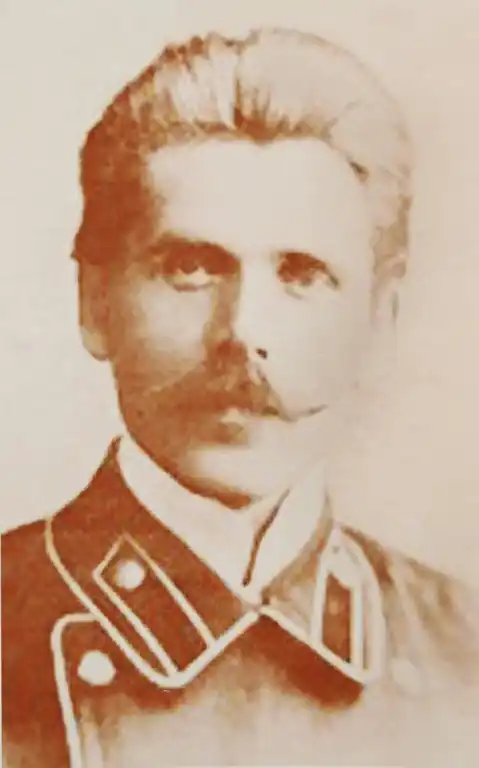
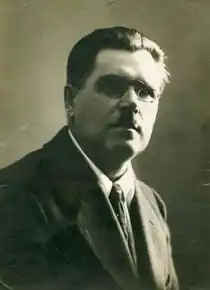
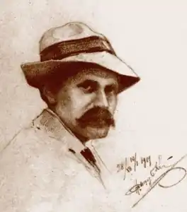

Народився 21.12.1874 р. на хуторі Хоменки біля Гадяча на Полтавщині. З дитинства виявив нахил до малювання. Закінчив народну, а потім Гадяцьку повітову школу. З 1899 р. навчався у Московському училищі технічного малювання, але через брак коштів не закінчив його. Повернувся в Україну і навчався у Одеському художньому училищі, а після закінчення у 1903-му вступив до Петербурзької академії мистецтв.
З 1906 р. Н. Онацький викладає у Лебединській гімназії. Водночас плідно малює, захоплюється етнографією, друкує розвідки в журналі "Рідний Край". На Першій українській артистичній виставці у Києві в грудні 1911 – січні 1912 р. було представлено 15 його картин. З 1913 р. Н. Онацький викладає малювання в реальному училищі, веде курси географії, малювання і креслення в Сумському кадетському корпусі.
Н. Онацький почав публікувати поезії з 1906 р. в альманахах "Терновий вінок", "Український декламатор", "Розвага", "З неволі", "Українська Муза", в журналі "Рідний Край". Написав п'єси "Через руїни", "Танок смерті", інсценізацію поеми Т. Шевченка "У тієї Катерини". У 1930 р. видав дитячу п'єсу "Новий світ", "Наша освіта". Після революції художник активно співпрацював з Українською партією соціалістів-революціонерів, але потім зосередився на науково-педагогічній і творчій роботі. У 1920-х р. викладає в учбових закладах Сумщини, у 1920 р. створює Сумський історико-художній музей, видає монографію "Сім років існування Сумського музею". На 1.10.1925 р. в музеї вже було 10 279 експонатів, багато з яких розшукав сам художник, що також брав участь у археологічних розкопках. На основі своїх досліджень Н. Онацький опублікував кілька цікавих праць. Така діяльність привернула увагу ГПУ, для яких будь-яке зацікавлення історією ототожнювалося з українським буржуазним націоналізмом. Його починають цькувати, вимагаючи публічного каяття. В листопаді 1933 р. Н. Онацький переїхав до Полтави, де йому запропонували організувати й очолити відділ етнографії місцевого музею. Пропозиція була небезпечною, бо чекісти на етнографію дивилися, як на чистої води націоналізм: "всі вишивки, всі керамічні вироби, різьба та інше в умілому розміщенні показуватимуть і підкреслюватимуть етнічну відокремленість України і для хоч трішки настроєної романтично голови даватимуть поживу національної відокремленості", – писалося в доповідній ГПУ. Весною 1934 р. Н. Онацького арештували, протримали за ґратами кілька місяців і випустили. З тюрми йому вдалося винести цілий зшиток віршів. 27.07.1935 р. його арештовують вдруге, за якийсь час відпускають, і знову йому вдається врятувати свої вірші. Третій арешт у вересні 1937-го завершився розстрілом 23.11.1937 р.